世界國旗的故事 江銘輝編寫
現在世界上超過160多個獨立國家當中，由於各個國家的創立經過、風土、文化、歷史背景都不相同，因而各國的國旗在圖案上，都經過特別考慮，以期能自然表現出特殊的風格來。不過世界各國在地理上、歷史上、文化及種族交流，或多或少有互相關係，因此在國旗設計上也可能出現共通的部分。如設計上把國旗加以某種程度的分析，探討其共通點，也是非常有趣的。
一、 和平的象徵：聯合國國旗
第二次世界大戰後，美國主張以「聯合國」來代替第一次世界大戰後成立的「國際聯盟」。聯合國成立後於1947年10月20日，根據第二屆聯合國大會的決議，制訂聯合國的國旗。
聯合國的國旗是以淺藍色為底，中央晝有地球和子午線，再用橄欖樹枝圍繞地球，橄欖自古以來即被視為和平的象徵，因此用橄欖的樹枝圍繞地球的圖案，可以說是表徵以和平與友好把世界結合成一體。
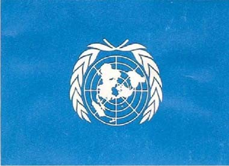
圖:聯合國的國旗
二、紅十字旗
國際機構紅十字會在戰時不分敵我的從事傷患醫護，在平時從事一般救護和疾病的預防。紅十字會由瑞士享利．杜南在1863年提倡，翌年依據日內瓦條約設立的，紅十字旗便是紀念杜南的功績，把瑞士的國旗顏色顛倒的旗幟。紅十字國際委員會及紅十會總部均設在瑞士日內瓦。
圖:紅十字旗 圖:瑞士聯邦旗
圖:紅十字旗是由瑞士旗衍變出來
三、中華民國國旗（青天白日旗）
中華民國的國旗，與國民革命有很密切的關係，它最初由陸皓東創作（只青天白日沒有紅底）。
陸皓東與孫中山都是廣東省香山縣翠亨村的人，幼時一起讀書。二人因毀損神像，遭受村民指摘，遠走上海、香港避難。
陸皓東於1894年加入革命團體「興中會」，第2年興中會計畫在廣州起義。並以陸皓東所創的「青天白日旗」為革命旗。最後因計畫洩露而告失敗，陸皓東殉難。
這是青天白日旗作為中華民國國旗的前身，真正成為中華門民國國旗還待後續發展。
1906年冬天，同盟會在日本東京召開幹部會議，討論中華民國國旗形式時，意見紛歧，居然有五種主張：有十八星旗、紅、黃、藍、白、黑之五色旗、金瓜鉞斧旗、井字旗及青天白日滿地紅旗。
孫中山先生堅持以青天白日二色旗，再加上紅色底為青天白日滿地紅旗，以紀念陸皓東及興中會諸烈士流血獻身之精神。
不過，青天白日滿地紅旗幟並未被通過，但之後孫中山先生領導的諸次革命戰役都是用「青天白日旗」來號召。
民國元年中華民國誕生，孫中山先生再度主張以「青天白日旗」為我國國旗，惟南京臨時參議院議定五色旗為國旗，並將青天白日旗定為海軍軍旗。但孫中山先生堅持認為以五色旗作為國旗不妥，於是在同年元月十二日咨覆參議院。
不久，袁世凱稱帝，孫中山先生在日本東京成立中華革命黨，展開討袁行動。再度規定以青天白日滿地紅旗為中華民國的國旗，民國10年孫中山重返廣州，就職非常大總統，再度努力促使青天白日滿地紅旗為中華民國之國旗。可是這面旗幟隨著陳炯明叛變而下旗。
民國12年陳炯明叛變失敗，孫中山先生自上海重返廣州就任陸海軍大元帥，凡孫中山先生所到之處皆飄揚著青天白日滿地紅旗幟，惟其他各地仍懸掛五色旗。
民國15年蔣中正繼承孫中山遺志，率國民革命軍北伐，民國17年北伐成功。中國各地始飄揚著這面得來不易的青天白日滿地紅旗幟！
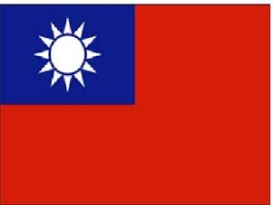
圖：中華民國國旗
四、太陽旗
國旗中，採用太陽的國家很多，日本是最著名的了，旗面上一輪紅日居中，輝映著白色的旗面。傳說日本是天照大神創造的，而天皇就是天照大神的子孫。除了日本以外:以太陽為國旗的尚有配置黃色太陽的菲律賓，以及位於喜馬拉雅山麓的尼泊爾，都把太陽以予圖案化。這些巧合的都是亞洲國家，在亞洲相反方向的阿根廷和烏拉圭其國旗也是將太陽加以圖案化。這種太陽被稱寫「五月的太陽」，使用大陽的原因是這些國家依據最初革命而獨立的故事，將之用在其國旗上。
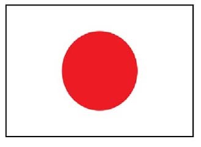
圖：太陽旗以日本最出名
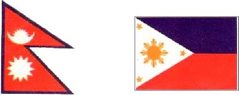
圖：尼泊爾王國 圖：菲律賓共和國
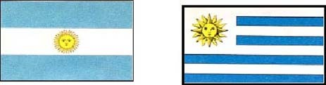
圖：阿根廷共和國 圖：烏拉圭共和國
圖：除日本外，世界上尚有許多國家以太陽為旗幟
五、中華人民共和國國旗（五星旗）
中華人民共和國的國旗，是1949年由上海“現代經濟通訊社＂的曾聯松設計的。它是人民政協從全國各地2992件作品中選出，在兩次的篩選後，有38幅入圍，最後曾聯松設計的紅地五星旗脫穎而出，但原創的大五星中央鑲有鐮刀與錘子，一些人認為與蘇聯國旗類似，經過幾番考慮後決定取出鐮刀與錘子的圖案，並改名為五星紅旗。
中華人民共和國國旗旗面為紅色象徵革命。旗上的五顆五角星及其相互關係象徵共產黨領導下的革命人民大團結。五角星用黃色是為了在紅地上顯出光明，黃色較白色明亮美麗，四顆小五角星各有一尖正對著大星的中心點，這是表示圍繞著一個中心而團結。
中國國旗中的大五角星代表中國共產黨，四顆小五角星代表工人、農民、小資產階級和民族資產階級四個階級。旗面為紅色，象徵革命，星呈黃色，表示中華民族為黃色人種。五顆五角星互相聯繫、疏密相間，象徵中國人民大團結。每顆小星各有一個尖角正對大星中心點，表示全體四個階級對黨的向心之意,受黨的全面的領導
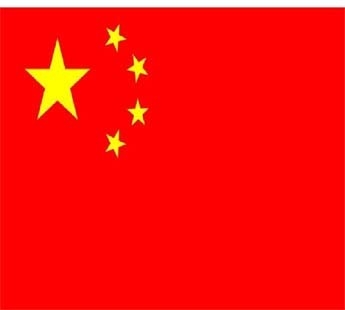
圖：中國國旗中的大五角星，代表中國共產黨
六、回教的鐮刀月與回教的顏色
信奉回教的民族所構成的國家，其國旗皆有若干的共同點，一是回教各國被視為神聖而尊重的鐮刀月與星星的標記，二是使用回教徒認為最神聖的色彩(綠色），最具有回教風格的是擁有聖城麥加的沙烏地阿拉伯，還在國旗上以白色阿拉伯文將可蘭經的一段話「除了阿拉以外沒有別的神，穆罕默德是神的使徒」寫在國旗上。
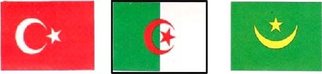
圖:土耳其共和國 圖:阿爾及利亞人民民主共和國 圖:茅利塔尼亞回教共和國
圖:巴基斯坦共和國 圖:沙烏地阿拉伯王國 圖:突尼西亞共和國
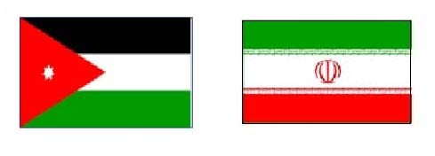
圖：約旦 圖：伊朗
圖:回教國家的國旗以星星、綠色及鐮刀月聞名
七、北歐與十字旗
北歐各國的國旗，都不約而同地使用十字的國旗，包括斯堪地那維亞半島及冰島。這些國家彼此在歷史、地理上有濃厚血緣關係，而且在宗教上都是基督教國家，因此象徵基督教徒的十字架被圖案化了。
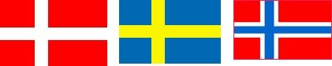
圖:丹麥王國 圖:瑞典王國 圖:挪威王國
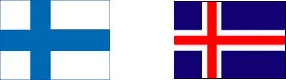
圖:芬蘭共和國 圖:冰島共和國
圖:北歐各國不約而同的使用十字的國旗
八、三色旗
說到三色旗，立即想到著名的青、白、紅法國三色旗，象徵自由、平等、博愛的這個旗是隨著法國大革命而誕生的，被認為最具代表性的革命旗幟，而以法國三色旗作參考設計的特別多，比利時的國旗就是一種例證，如今世界國旗中數目最多的便是三色旗。採用三色旗著名的國家除了法國以外，尚有荷蘭、匈牙利、南斯拉夫、義大利、德國等。
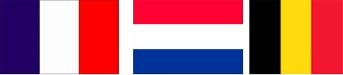
圖：法國 圖：荷蘭王國 圖：比利時王國
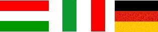
圖：匈牙利 圖：義大利 圖：德國
圖：歐洲許多國家的國旗以三色旗表示
九、美國國旗
美國的國旗，通常以「星條旗」的稱呼膾炙人口，這面星條旗在過去長期間以來，一直保持以象徵，美國四十八州的四十八顆星之型式，而後1958年7月美國國會同意阿拉斯加加入為新的一州，因此1959年星條旗的星數就增加了一顆。恰巧，1959年8月夏威夷也升格為一州，於是再增加為五十顆星。
美國星條旗正式制訂為國旗是在1777年6月14日，1818年美國的國會把剛獨立的13州的紅與白交替條紋限制為13條，不再增加，但星星數目每增加一州，則增加一顆星，因此今日美國國旗共有13條50顆星了。
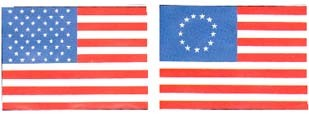
圖:美國的星條旗聞名世界各國 圖:美國剛獨立時的國旗
十、動物與植物
有些國家更有趣的，在國旗上面畫上動物與植物，雖然有些畫蛇添足，但也不失沈樸可愛，如里藍卡的國旗上畫有獅子、不丹王國畫有龍、黎巴嫩共和國的黎巴嫩杉、加拿大的楓葉旗…等等。這其中又以加拿大的楓葉旗最著名。
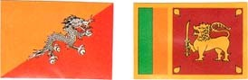
圖:不丹王國 圖:斯里蘭卡民主社會主義共和國
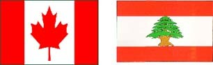
圖：加拿大 圖:黎巴嫩共和國
圖:世界仍有許多國家以動、植物為國旗
十一、英國的國旗典大英國協聯邦
英國進出七海，在這面國旗下發揚國威，擁有無數的殖民地，號稱「日不落國」，在世界各國中，以前是英國的領地而今脫離母國獨立的國家不勝枚舉，這些國家中，採用英國國旗為母型的，仍然很多。
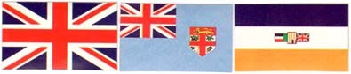
圖:大不列顛北 圖:斐濟 圖:南非共和國
愛蘭聯合王國
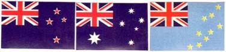
圖:紐西蘭 圖:澳洲 圖:吐瓦魯
圖:大英國協聯邦諸國的國旗以英國國旗「米」字為藍本
十二、象徵宇宙的國旗
世界上仍然有些國家以宇宙象徵為國旗，它是韓國與巴西，巴西國旗是由綠色作為背景，加上黃色的菱形，而在菱形上再有一個藍色的天體，天體上有以南十字星座為中心的27顆白星，中央的一句葡萄牙語格言是說「秩序與進步」。綠色代表茂密叢林，黃色代表豐富的礦產資源。天體的下半部代表制定國旗時的首都里約熱內盧天空顏色。天體畫有以南十字星為中心的二十七顆星，則代表首都與二十六個州。
韓國的國旗稱為八卦太極旗，是以中國的儒教及道教的思想為基礎而繪製的。白底代表神聖的國土；太極圖象徵宇宙天地以及單一民族構成的國家。中間太極的圓代表人民；太極的兩儀為上紅下藍，分別代表陽陰。四角的卦是：左上方為乾， 右下為坤，右上為坎，左下為離， 分別代表天地水火，父母男女之意。
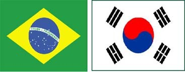
圖：巴西 圖：韓國